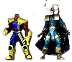

|
The calculated scales appear in red numbers in the tables below. Reference errors that meet +/-3 inch criteria for a given scale are indicated by green numbers in the Ref Error columns. | |||||||||||||||||||||||||||||||||||||||||||||||||||||||||||||||||||||||||||||||||||||||||||||||||||||||||||||||||||||||
X-Men
The old Apocalypse is puny - Wolfsbane could take this guy out. Jean is way too tall, and has legs for days. She's gotta go. Otherwise they look pretty good. Bishop could be a little taller, Magik a little shorter. Onslaught Apocalypse fits in because of his size-changing ability. Besides, at this large size he looks powerful and menacing, like he is about to pound the X-Men into the ground. I also added a Wolverine custom. The Water Wars version is too small, the Super Shooters is too big; and let's face it, you GOTTA have a Wolverine. Classic X-Men
I also checked the Classic X-Men boxed set (not pictured). Not too bad, except that Beast is even larger than 6" scale. I did not have a character reference height for Hank before he mutated into the furry Beast, so maybe he was taller at that time. | |||||||||||||||||||||||||||||||||||||||||||||||||||||||||||||||||||||||||||||||||||||||||||||||||||||||||||||||||||||||
Avengers
Next we have the Avengers, my favorite Marvel group. The older Iron Man is a pretty good likeness, but too small for the 5.5" scale. On the other hand, three of the figures are too big to fit in my +/- 3 inch scale limitations: 1. Absorbing Man is slightly large (+4 inches), but his size is somewhat variable in the comics; 2. Thor is also a little oversized (+4 inches), but I've seen him shatter a mountain with a single blow, so he ought to be pretty big; and 3. Heroes Return Iron Man is simply too big (+5 inches) and weird-looking, so he will have to be destroyed. So what will I do for a Shellhead? You guessed it - I have a 5.5" custom version here. | |||||||||||||||||||||||||||||||||||||||||||||||||||||||||||||||||||||||||||||||||||||||||||||||||||||||||||||||||||||||
The Hulk
Here are some Hulk figures. With the exception of the Leader, they are in scale with each other and look really cool (see all the pretty green colors). According to OHOTMU,the Leader is only 5' 10", but I think he should be a lot taller with that overgrown cranium. The Outcasts Wendigo figure (not shown) is too small, since it is supposed to be about 10 feet tall. Unless I customize my own however, I will still display it with the others. | |||||||||||||||||||||||||||||||||||||||||||||||||||||||||||||||||||||||||||||||||||||||||||||||||||||||||||||||||||||||
Spiderman
The newer Spiderman lines are some of my favorites. Excellent sculpts and attention to scale. The Black Cat, Electro, and the Rhino are a little small, but they still seem to fit in pretty well with this group. Spidey looks lean and agile, belying his awesome spider-strength. Thus far, there is not a 5.5" scale Venom that I am aware of. A good one HAS to come out soon without fins, extra heads, green skin, or a tail! I am not sure at this time whether or not the Bug Busters Venom will work. | |||||||||||||||||||||||||||||||||||||||||||||||||||||||||||||||||||||||||||||||||||||||||||||||||||||||||||||||||||||||
Silver Surfer
I have some real problems with the Surfer line. The Silver Surfer is too small, but I can't make a custom that will match the quality of Toy-Biz's vac-metalized version. Also Beta Ray Bill is too big, but he is sooo cool, I have to include him. One thing I can do is to add some leg length to Thanos (who's reference error is 12 inches too short in 5.5" scale) to make him fit in and be more imposing. I am probably also going to customize my own Drax. This one is too far off from the comic version for my taste. |
Cross CheckJust so you won't think I'm pulling a fast one on ya by strategically grouping the figures, I took a representative character from each of the above groups and put them together for comparison. It looks to me like we have a dynamic gallery of Marvel heroes (in scale) who are ready to kick some evil butts! |
|  |
And now for the final test for my scale criteria: compare two figures, one that is at the -3 inch limit, and one that is at the +3 inch limit. I'll use Missle Flyers Bishop (-3) and Avengers Loki (+3). Keep in mind that Loki is 6'4" and Bishop is only 6', so Loki should be considerably taller, even if they were exactly the same scale. Bishop is about shoulder-high to Loki, which makes me believe that we're pushing the edge of the compatibility limit. I had considered having an even wider margin of error, say +/- 5 inches, but I think 3 inches is about as far as I want to go. |
Custom Bases
The table above shows the same scale analysis for some cheap customizable base figures, assuming a 6 foot male and 5 foot, 9 inch female (those Marvel gals are tall!). As you can see, the pickins is mighty slim for customizing in 5.5" scale. However, some of the more recent 5.5" figures have now gone on sale, such as The Hulk, Avengers, X-Men, and Spiderman. As I mentioned, these figures are more radically styled, versus generic. This will force customizers to be even more creative, but could potentially lead to very exciting and original work. | ||||||||||||||||||||||||||||||||||||||||||||||||||||||||
|
|